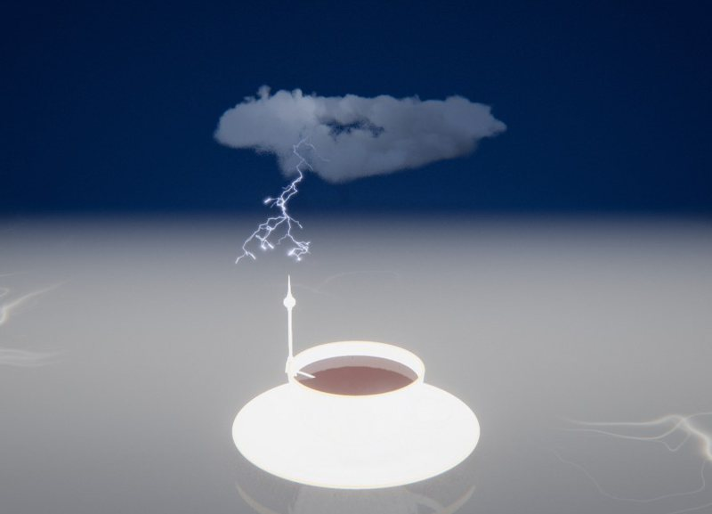

01Ce que l'on veut voir
mega/src/main.js · DAYSLes vingt-trois scènes se suivent dans un ordre qui suit la matière : le feu (la lave, le verre fondu, la cire), l'eau (le thé qui bout, le bassin, la mer, la rigole), la terre et le vivant (la pierre que la mousse reverdit, le bois mort, la plume, la membrane), les fibres (la soie, le papier, la corde, les câbles), les mécanismes (le balancier, le dédale), le métal que la rouille met à nu, la lumière (l'éclair et son écho, le mirage), puis la géométrie et le ciel (les coquilles emboîtées, l'hypercube, le planétaire). Après le planétaire, on revient à la lave.
Chaque jour joue sa boucle au moins une fois. À la fin de la boucle, un passage de quelques secondes mêle l'image qui s'en va et celle qui arrive. Pendant tout ce temps, aucun écran de chargement : le jour suivant doit être prêt quand le passage commence.
Chaque scène, prise seule, est déjà lourde. Elle calcule sa géométrie au chargement (simulations, maillages, textures), compile des centaines de programmes pour la carte graphique (les shaders), et réserve des centaines de mégaoctets pour ses images intermédiaires. La suite de la page montre pourquoi on ne peut pas simplement tout charger, puis comment on fait à la place.
02Tout charger d'un coup ne tient pas
mesures : chaque scène chargée seule, 1 280 × 720La première idée est la plus simple : charger les vingt-trois scènes au démarrage, puis passer de l'une à l'autre. On a mesuré ce que chaque scène occupe une fois prête, dans sa propre page. Deux mémoires comptent :
- la mémoire vidéo, celle de la carte graphique : textures, géométrie et surtout les images intermédiaires de la chaîne de rendu (occlusion, réflexions, flou de profondeur…), de 80 Mo (Mirage) à 677 Mo (Membrane) ;
- la mémoire du programme JavaScript, qui garde les données de génération : de 92 Mo (Fold) à 1 073 Mo (Magma).
Additionnées, les vingt-trois scènes demandent environ 6,2 Go de mémoire vidéo et 8 Go de mémoire JavaScript. C'est plus qu'un onglet de navigateur ne peut prendre sur la plupart des machines, et le chargement durerait plusieurs minutes.
Aucune scène n'a besoin de la mémoire des autres pendant qu'elle joue. Il suffit donc d'en avoir deux à la fois : celle que l'on regarde et celle qui vient ensuite. Le pire couple de voisins, Membrane et Cocoon, tient en 907 Mo de mémoire vidéo à la taille des pages ; dans le relais, qui dessine plus grand (1 777 × 1 528 pixels), le pire moment mesuré est de 1,6 Go.
- Montez le curseur à 23 : la barre atteint 6,2 Go de mémoire vidéo.
- Activez « Le relais » : la barre ne dépasse plus le pire couple, quel que soit le nombre de scènes. Quel couple est le plus lourd ?
03Un jour joue, le suivant se prépare
mega/src/main.js · load(), tick() · mega/src/kit.js · prepare()Une scène met entre 1,5 et 23 secondes à se préparer (générer sa géométrie, compiler ses programmes, rendre ses premières images). Si l'on attendait la fin d'un jour pour préparer le suivant, chaque passage serait remplacé par un écran noir de plusieurs secondes.
La règle est donc de préparer le jour suivant pendant que le jour courant joue sa boucle. Dès qu'un jour commence à jouer, on crée le suivant ; ses calculs tournent en arrière-plan, et il dessine ses premières images dans une image à part, que personne ne voit. Quand la boucle du jour courant se termine, le suivant est prêt, et le passage peut commencer.
Il reste un cas : un jour suivant plus long à préparer que la boucle du jour courant. On ne coupe pas la boucle en cours de route. Le jour courant fait simplement un tour de plus, et le passage attend la fin de ce tour.
// à chaque image (mega/src/main.js, simplifié)
cur.u += dt / cur.duration; // la boucle du jour courant avance
if (!trans && cur.u >= cur.end - T / cur.duration) {
if (next.state === 'ready') trans = { t: 0 }; // le passage commence
else cur.end += 1; // pas prêt : un tour de plus
}cur.u est la phase de la boucle : elle vaut 0 au début, 1 à la fin du premier tour, 2 à la fin du second. T est la durée du passage (5 secondes). Le passage commence T secondes avant la fin du tour, de sorte qu'il se termine exactement à la fin de la boucle.
- Comparez « À la suite » et « En relais » : le gris disparaît presque entièrement.
- En relais, montez le ralentissement à × 3. Quels jours font un tour de plus ? Ce sont ceux qui suivent une boucle courte, ou qui se préparent longtemps.
Une première version, pour passer plus vite au jour suivant, faisait sauter la phase du jour courant à la fin de sa boucle. Pour Melt, c'était une erreur : sa cire est simulée pas à pas (une méthode particulaire, MPM), et après un saut, la simulation rattrape le temps perdu, jusqu'à 48 pas par image. Plus l'image est longue, plus il y a de pas à rattraper, et l'image suivante est plus longue encore : le passage tombait à 4 images par seconde. Le relais ne fait donc jamais sauter la phase d'un jour. La touche → demande le passage tout de suite, depuis l'endroit où en est la boucle.
04Préparer sans voler d'images
shared/app/warmup.js · warmScene · mega/src/kit.js · melt/src/gen/shape.jsPréparer un jour en arrière-plan ne suffit pas s'il prend le temps du jour qui joue. Le navigateur n'a qu'un fil d'exécution principal (le fil principal), qui doit calculer chaque image en moins de 16,7 ms pour tenir 60 images par seconde. Si la préparation occupe ce fil une demi-seconde d'un bloc, l'image du jour courant se fige une demi-seconde.
Dans sa propre page, une scène se prépare derrière un écran de chargement : elle peut prendre le fil principal par paquets de 100 ms sans que personne ne le voie. Dans le relais, le même paquet fige le jour qui joue. Trois corrections ont été nécessaires :
- Construire peu à la fois. La préparation dessine la scène en ne construisant, à chaque image, que les objets nouveaux qui tiennent dans un budget ; les autres attendent l'image suivante. Le budget passe de 100 ms (dans la page) à 6 ms (dans le relais), et la préparation ne dessine qu'une fois par image du relais.
- Calculer ailleurs. Tout calcul lourd de la génération va dans un worker, un fil d'exécution séparé. Melt calculait ses figurines (le champ de distance de l'objet, ses particules, les deux demi-moules) sur le fil principal : deux blocs de 1,1 et 1,3 s. Ils tournent maintenant dans son worker, qui produit les mêmes octets (vérifié pour les cinq objets).
- Étaler les calculs de la carte graphique. Erosion simule son paysage sur la carte graphique pendant sa préparation : 17 455 pas. Envoyés par lots de 256, ils occupaient la carte graphique devant le jour qui joue. Ils partent maintenant par lots de 32, un lot par image.
- Avec un budget de 100 ms, la préparation se termine vite, mais six images durent plus de 50 ms (la pire, 116 ms) : on voit l'image se figer. Passez à 6 ms : plus aucune image ne dépasse 18 ms, et la préparation prend 2 s au lieu de 0,8 s.
- Remettez les figurines sur le fil principal : deux images d'une seconde apparaissent, quel que soit le budget. C'était le ralentissement visible au début de Shatter.
Une scène éclairée par un studio (une image panoramique qui sert de ciel et de reflet) le préfiltre au chargement : la carte graphique en calcule des versions floues, une par degré de rugosité des surfaces, en dessinant dans une suite de petites images. Pour le découpage par budget, chacune de ces petites images était un objet « nouveau ». Avec 6 ms par dessin, une partie du préfiltrage était sautée, et le studio restait faux pour toute la durée du jour. Sur Bolt, la tasse et la table sortaient brûlées. La préparation refait maintenant le préfiltrage une dernière fois, sans découpage.

Pour aller plus loin
Le découpage tient à deux remplacements faits pendant la préparation (shared/app/warmup.js). La création des programmes de la carte graphique devient asynchrone : tant qu'un programme n'est pas prêt, l'objet est sauté. Et la fonction qui dessine un objet vérifie d'abord si cet objet a déjà été construit pour ce matériau et cette passe ; sinon, et si le budget de l'image est dépassé, elle le saute. Le relais coupe ces deux remplacements le temps de dessiner le jour qui joue, pour qu'aucun de ses objets ne soit sauté.
Pour Erosion, attendre que la carte graphique ait fini un lot avant d'envoyer le suivant (onSubmittedWorkDone) revenait à attendre aussi le dessin du jour qui joue : moins de trois lots par seconde, une préparation de 130 s. Avec un rythme, le lot suivant attend seulement l'image suivante, puisque la file de la carte graphique exécute déjà les travaux dans l'ordre. Erosion est prête en 20 s derrière Kelp, dont la boucle dure 32 s.
05Un seul moteur pour vingt-trois scènes
mega/src/kit.js · makeDay().draw · mega/src/composite.jsChaque page a son propre moteur de rendu, qui dessine dans le canvas de la page. Le relais n'en a qu'un, partagé par tous les jours. Chaque jour dessine dans une image à lui, jamais dans le canvas ; seule la composition du relais écrit dans le canvas, en copiant l'image du jour qui joue, ou en mêlant les deux pendant un passage.
Partager un moteur, c'est aussi partager ses réglages et quelques valeurs communes aux modules. Plusieurs scènes supposaient être seules :
- Le canvas. Le champ de lave de Magma se dessine dans ses propres images, puis revient « au canvas » plutôt qu'à l'image d'où il venait. Dans sa page, c'est sans conséquence. Dans le relais, la suite de l'image de Magma partait dans le canvas : Magma apparaissait par éclairs au milieu de Melt pendant qu'il se préparait, et son image restait noire quand il jouait. Pendant le dessin d'un jour, le relais remplace donc « le canvas » par l'image du jour.
- La phase précédente. Un module commun garde la phase de l'image courante et celle de l'image précédente, pour calculer le mouvement de chaque point (le flou de mouvement, l'anticrénelage). Pendant un passage, deux jours dessinent dans la même image du relais, à deux phases différentes. Chaque jour garde donc sa propre phase précédente et la remet avant de dessiner.
- Les réglages du moteur. La chaîne de rendu de Kelp change le mappage des tons du moteur ; Fold a besoin d'ombres plus douces que les autres. Ces réglages sont rendus tels quels après chaque dessin d'un jour.
06Rendre la mémoire
mega/src/kit.js · installLedger(), releaseTextures()Après un passage, le jour qui s'en va doit rendre toute sa mémoire, sinon le relais en accumule à chaque tour. La première version parcourait la scène du jour et libérait ce qu'elle y trouvait : géométries, matériaux, textures des matériaux. Il restait de 228 à 560 Mo par jour. Les objets restés en mémoire ne sont pas dans la scène : les cartes d'ombre des lumières, les images intermédiaires de la chaîne de rendu, le studio préfiltré, les textures lues seulement dans les programmes de la carte graphique, les tampons de calcul des particules de Melt.
Le relais tient donc un registre. Chaque fois que le moteur crée une texture ou un tampon sur la carte graphique, il regarde quel code l'a demandé : la pile des appels en cours contient le chemin du fichier, et donc le nom du projet (/melt/src/…). La ressource est inscrite au nom de ce projet. Quand le jour s'en va, tout ce qui est inscrit à son nom est rendu. Il reste alors 0 Mo du jour.
// mega/src/kit.js, simplifié
be.createTexture = (texture, options) => {
const stack = new Error().stack; // qui a demandé cette texture ?
const owner = /\/([a-z0-9_]+)\/src\//.exec(stack)?.[1] ?? drawing;
ledgers.get(owner).add(texture);
return create(texture, options);
};Le moteur crée certaines ressources une fois pour toutes les scènes, au moment où la première en a besoin : une table qui sert à l'éclairage de tous les matériaux physiques (DFG_LUT), l'image de travail du préfiltrage des studios. Créées pendant le dessin du premier jour, elles étaient inscrites à son nom et rendues avec lui. Le registre note maintenant aussi quels jours utilisent chaque ressource, et ne rend que ce qu'aucun autre jour n'a utilisé.
Pour aller plus loin
Deux cas échappent au registre. Ce qu'un jour crée directement sur la carte graphique, sans passer par le moteur (les tampons de la simulation d'Erosion, 270 Mo, et ceux des ondes de Caustic, 48 Mo), est rendu par une fonction propre au jour, appelée à sa libération. Et deux jours du même projet ne peuvent pas être en mémoire en même temps, puisque le registre ne sait pas les séparer.
Mesuré sur un tour complet des vingt-trois jours : avec un seul jour chargé, la mémoire vidéo va de 270 Mo (Mirage) à 1 140 Mo (Membrane), et revient à la même valeur quand le même jour revient (Shatter : 545 Mo aux deux tours). Rien ne s'accumule.
07Passer la main
mega/src/transitions.js · mega/src/composite.jsUn fondu enchaîné aurait suffi pour passer d'un jour à l'autre. Mais chaque scène raconte un geste : la lave qui se fend, la vague qui monte, l'onde qui converge vers un point. On entre donc dans un jour par ce qui s'y passe. Chaque jour déclare son passage d'entrée (meta.enter), et la composition l'applique pendant les cinq secondes du passage.
Un passage est une fonction qui, pour chaque pixel, décide quelle image montrer. On lui donne l'avancée du passage p, de 0 (tout le jour qui s'en va) à 1 (tout le jour qui arrive). La plupart des passages suivent le même schéma : chaque pixel reçoit un ordre d'ouverture entre 0 (s'ouvre d'abord) et 1 (s'ouvre en dernier), et un front qui avance avec p ouvre les pixels dont l'ordre est dépassé. Tout le caractère du passage est dans cet ordre : la distance à une fissure pour la lave, la hauteur dans l'image pour la vague, la distance au centre pour les ondes.
m est la part de l'image qui arrive dans le pixel, o son ordre d'ouverture et w la largeur du front (de 0,03 à 0,07). Le facteur (1 + 2w) garantit que tout est fermé à p = 0 et tout ouvert à p = 1. Le liseré, qui donne sa couleur au front (incandescent pour la lave, écume pour la vague), vaut (4m(1 − m))1,5 : il est nul loin du front et maximal dessus.
- Figez « → Magma » vers 0,3 : les fissures rougeoient avant de s'ouvrir. L'ordre d'ouverture suit la distance au bord des cellules.
- Comparez « → Caustic » et « → Echo » : tous deux ouvrent en cercle, mais l'onde vient des bords vers le centre (le foyer des ondes de Caustic), l'éclair part d'un point vers les bords (la lampe d'Echo).
La composition lisait d'abord l'image de chaque jour par un nœud de texture dont on changeait la valeur à chaque passage. Le moteur ne relit cette valeur qu'à l'image suivante : la première image de chaque passage était entièrement noire (luminosité 0, mesurée sur le canvas). La composition lit maintenant toujours les deux mêmes emplacements, et un seul nombre dit lequel tient le jour qui s'en va.
08Une seule source pour la page et le relais
<projet>/src/core.js · main.js · day.jsLe relais doit montrer chaque jour exactement comme sa page. La première version recopiait, pour chaque jour, le rendu d'une phase de la page : la caméra, la lumière, le brouillard, la mise au point. Une retouche de la page n'aurait pas atteint le relais. Chaque projet a donc trois modules :
core.js, le cœur : la scène, l'application de la recette, le rendu d'une phase ;main.js, la page : l'écran de chargement, le panneau de réglages, l'adresse, l'export vidéo, la caméra libre ;day.js, le jour du relais : les réglages par défaut, la graine d'ouverture de la page, le passage d'entrée.
La page et le relais appellent la même fonction renderAt du cœur. Le relais lui passe en plus l'avancée de la caméra pendant un passage (push) ; la page, la caméra libre et les décalages du rendu accumulé.
// melt/src/day.js
export async function createDay({ renderer, pipes, width, height, seed = meta.seed }) {
const gen = generatorFor('melt', workers);
const core = await createCore({ renderer, width, height, gen, lite: false, RENDER: defaultsFor(false) });
core.applyRender();
core.setRecipe(generate(seed));
return makeDay({ meta, renderer, pipes, width, height, gen,
scene: core.scene, camera: core.camera, post: core.post,
duration: core.duration, isReady: core.isReady, progress: core.progress, warmPhases: core.warmPhases,
renderAt: (u, { push = 0 } = {}) => core.renderAt(u, { push }) });
}Passer les vingt-trois pages par leur cœur ne devait rien changer à leur image. Chacune a été rendue avant et après, à trois phases, par l'outil de non-régression du dépôt (tools/regress.html), qui compare l'écart au bruit propre de chaque scène (deux rendus du même code ne sont pas identiques au pixel près, à cause du grain et des particules). Les 69 images sont restées dans ce bruit.
npm run check refuse un projet sans core.js ou sans day.js, une page ou un jour qui n'importe pas le cœur, une graine du relais différente de celle de la page, un passage d'entrée inconnu, un jour de l'ordre qui n'existe pas. La skill qui fabrique les nouvelles scènes pose ces trois modules dès l'échafaudage.
09Vérifier que le relais est la page
tools/relay-check.htmlLes défauts de cette page ont tous été trouvés en comparant une image du relais à la même image dans la page du projet : la tasse brûlée, l'écran noir, la première image noire. L'outil tools/relay-check.html refait cette comparaison pour chaque jour, dans les conditions du relais : le jour est préparé en arrière-plan, derrière le jour qui le précède, puis rendu à la même taille et à la même phase que sa page. Les deux images sont moyennées par blocs de 8 × 8 pixels, pour effacer le grain, puis comparées. Vingt-deux jours restent sous le seuil de 1,5. Membrane le dépasse (2,8 et 3,2) : sa simulation dépend de son histoire, qui n'est pas exactement la même quand le jour se prépare par petits paquets derrière un autre ; la teinte et l'exposition, elles, ne changent pas.
Les mesures se font dans un panneau de navigateur intégré à l'outil de développement. Quand ce panneau est masqué, le navigateur ralentit la page et ses captures d'écran restent périmées : les temps mesurés deviennent faux, et ce qu'on croit voir est une image ancienne. Les outils du relais ont donc leur propre boucle manuelle (run()), et relisent les images sur la carte graphique pour les envoyer à un petit serveur local qui les enregistre.
10Budget
| Mesure | Où | Valeur |
|---|---|---|
| Les 23 scènes chargées ensemble (mémoire vidéo / JavaScript) | chaque page seule, 1 280 × 720 | 6,2 Go / 8 Go |
| Le pire couple de jours voisins (mémoire vidéo) | idem | – |
| Préparation d'un jour en arrière-plan | relais, panneau visible | – |
| Erosion préparée derrière Kelp (17 455 pas de simulation, 32 par image) | relais | ≈ 20 s |
| Image du jour qui joue, pendant la préparation du suivant (médiane par jour) | relais, 1 777 × 1 528 pixels | 8 – 52 ms |
| Image pendant un passage (deux jours dessinés, puis la composition ; médiane) | idem | 17 – 66 ms |
| Gels restants : Tesseract pendant la préparation d'Orrery (ses machines, sur le fil principal) ; Echo pendant celle de Mirage | idem | 0,58 s · 1,3 s |
| Mémoire vidéo avec un seul jour chargé / avec le suivant prêt | relais | 270 – 1 140 Mo / 740 – 1 600 Mo |
| Écart moyen entre le relais et les pages | tools/relay-check.html | – |